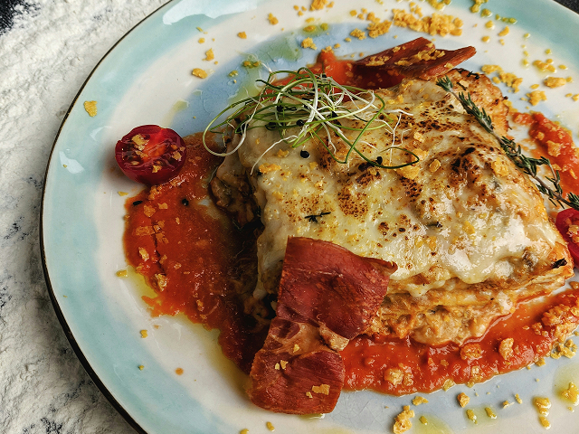

Lasagna

Description
A classic lasagna made with layers of pasta, rich tomato and beef sauce, and creamy cheese. A simple and comforting family meal.
Ingredients
- 500 g ground beef
- 1 onion
- 2 cloves garlic
- 400 g canned tomatoes
- 2 tbsp tomato paste
- 250 g lasagna sheets
- 200 g mozzarella
- 100 g grated Parmesan
- Salt
- Black pepper
- 1 tsp dried oregano
Steps
- Chop the onion and garlic.
- 1 onion
- Cook the onion and garlic in a large pan.
- Add the ground beef and cook until browned.
- Add the tomatoes, tomato paste and oregano.
- Simmer the sauce for 15–20 minutes.
- Layer the sauce, lasagna sheets and cheese in a baking dish.
- Bake at 180°C for about 40 minutes.
- Let it rest for a few minutes before serving.
Home